← 回股市觀察
逐檔技術線型分析
2026/11/26 · 成交金額上市前 50 名 ＋ 上櫃前 20 名（共 70 檔）· 公開資料整理
39151.81
加權指數 +956.38 點（+2.50%）
971 / 83
上市個股上漲／下跌家數
上漲 89.4% · 下跌 7.6% · 持平 2.9%（共 1086 檔）
666 / 156
上櫃個股上漲／下跌家數
上漲 75.7% · 下跌 17.7% · 持平 6.6%（共 880 檔）
統計範圍：當日成交金額上市前 50 名 ＋ 上櫃前 20 名（共 70 檔，皆為 4 位數代號的個股，不含 ETF／權證）。
兩個市場各自取前 N 名後合併呈現，卡片上標示市場別（上市／上櫃），清單也附市場分布。
條件統計：上市 上升趨勢：底底高 ＋ 頭頭高 0 檔、突破頸線 0 檔、底底高 1 檔、頭頭高 4 檔、站上月線 8 檔、月線向上 2 檔、外資買超 21 檔、量價攻擊（收紅＋大量） 24 檔、跌破前低（線型轉弱） 2 檔；上櫃 上升趨勢：底底高 ＋ 頭頭高 1 檔、突破頸線 1 檔、底底高 1 檔、頭頭高 1 檔、站上月線 2 檔、月線向上 1 檔、外資買超 11 檔、量價攻擊（收紅＋大量） 10 檔、跌破前低（線型轉弱） 0 檔。
五項全滿足（底底高＋頭頭高＋站上月線＋月線向上＋5 日線向上）：上市 無；上櫃 天品。
資料日 2026/11/26。籌碼：上市為證交所三大法人、上櫃為櫃買中心三大法人；上櫃另附融資餘額。
每一檔都附上 K 線圖與線型說明：黃圈是轉折低點、粉圈是轉折高點、藍線是月線。
圖上兩條水平虛線、左側標數值：高點頸線（紅，連到最多「轉折高點」的那條水平線，代表上方壓力帶；收盤站上就算突破）與
低點頸線（綠，連到最多「轉折低點」的那條水平線，代表下方支撐帶；收盤跌破就算跌破）；
兩條線都只看最近 6 個轉折點、容忍同一價位帶 4%，連不到 2 個轉折點就不畫。
卡片的標籤可以點回上方對應清單，清單裡的股名也可以點到該檔。
本頁為公開資料（證交所每日收盤行情與三大法人、櫃買中心每日收盤行情與三大法人、Yahoo 股市日線）的整理與觀察，
不構成投資建議，不報牌、不預測、不下買賣決策。
大盤趨勢快篩（加權指數） 資料日 2026/11/26・來源：證交所公開資料
主狀態：跌破頸線（M 頭成立）
前一交易日對照（11/25）：跌破頸線（M 頭成立）（量比 20 1.26） → 今日跌破頸線（M 頭成立）（量比 20 0.87）
指標、數值、判定（點開看 12 項明細：均線位置／排列、月線方向、頸線、轉折結構、位階、量價…）
加權指數今天漲 956.38 點（+2.50%），收 39,151.81、跌破月線 41,156.57；月線還在下彎，MA10 這條短均還沒收復，離高點頸線 47,615.17 還差 17.77%。
- 均線位置：4 條均線站上 1 條；沒站上的是 MA10 39,374.39（收盤比它低 0.57%）、MA20 41,156.57（收盤比它低 4.87%）、MA60 45,253.28（收盤比它低 13.48%）
- 月線方向：月線 MA20 現在 41,156.57，比 5 個交易日前低 2,105.73 點 → 下彎
- 量能：集中市場成交 8,453.4 億，比 5 日均量少一些（0.93 倍）、比 20 日均量少一些（0.87 倍）
- 關鍵價位：高點頸線 47,615.17，還差 17.77%；低點頸線 44,639.15已跌破
- 大小型股：加權 +2.50%、櫃買 +5.03%，兩邊同向

圖說：加權指數日 K（與個股圖相同標記）：黃圈＝轉折低點、粉圈＝轉折高點、虛線小圈＝還沒確認的轉折、藍線＝月線 MA20、水平虛線＝高點／低點頸線。最後一根是資料日當天。
本區塊為公開資料的技術面觀察，不構成投資建議，
不報牌、不預測、不下買賣決策。成交金額為集中市場總成交金額（含 ETF／權證），
與頁首摘要的「上市個股成交金額」口徑不同。標籤是統計，不是評分、也不是推薦。
上市 vs 上櫃（同期快篩）
加權 +2.50% vs 櫃買 +5.03%（同向） → 同向
（兩個市場分開寫，不合併成一個數字；櫃買為 TPEX 公開資料）
櫃買歷史：TPEX 逐日回補 130 根；來源：櫃買中心 www/zh-tw/indexInfo/sectinx（逐日，官方；OpenAPI tpex_index 只回當月）
（TPEX OpenAPI 只回當月，故逐日回補；歷史不足就不算該條均線並標「資料不足」，不用錯數字）
近 20 個交易日大盤狀態回溯（最新在上）（點開看逐日主狀態／量比／量價象限）
用同一支程式回算最近 20 個交易日（主狀態 S1~S8 與量比 20 皆為當日收盤當時的判定，
不是事後調整）；量比 20 未公布的日子寫「—」。
好條件最多的（前 10）
不好條件最多的（前 10）
本期市場狀態：空頭（等權指數在 60 日均線之下）（空頭期間：趨勢類條件反向（回測後 20 日差距 −0.9% ~ −2.1%），本排行改用超跌反轉類（跌破前低／在月線之下／月線下彎））
好條件（4 項）：跌破前低、在月線之下、月線下彎、外資買超。
不好條件（5 項）：站上月線、月線向上、突破頸線、量價攻擊（收紅＋大量）、外資賣超。
兩邊都是同一組資料（日線結構＋當日收盤量價籌碼）算出來的「符合項目數」，只是方向相反；
條件數不是評分、也不是推薦，不構成投資建議。
上升趨勢：底底高 ＋ 頭頭高（1 上市 0／上櫃 1）
量價攻擊（收紅＋大量）（34 上市 24／上櫃 10）
逐檔分析（70 檔）
區間或轉弱 成交金額 986.55 億・全榜第 1 名（上市第 1 名）
好條件 2/4：在月線之下、月線下彎
不好條件 1/5：外資賣超

今天收黑、跌破月線 2222.5，離高點頸線 2435 還差 11.9%，轉折還沒走出明顯方向。
- 月線位置：收盤 2145 在月線 2222.5 之下；5 日線 2111 也在月線之下（短均在下）；月線走平或向下、5 日線走平或向下
- 量能：成交量是 20 日均量的 1.00 倍，跟 20 日均量差不多
- 關鍵價位：高點頸線 2435 還沒突破，差 11.9%；最近轉折高點 2395（低於 10.4%）；最近轉折低點 1970（高於 8.9%）
- 轉折結構：低點 2020、1970、1970 與高點 2435、2395、2395 都沒有明顯遞增，屬於區間震盪或轉弱；還沒確認的轉折低點 11-25 2020；還沒確認的轉折高點 11-24 2230、11-26 2170（圖上虛線小圈）
區間或轉弱 成交金額 591.01 億・全榜第 2 名（上市第 2 名）
好條件 2/4：在月線之下、月線下彎
不好條件 2/5：量價攻擊（收紅＋大量）、外資賣超

今天帶量收紅、跌破月線 3768.5，離高點頸線 5165 還差 28.3%，轉折還沒走出明顯方向。
- 月線位置：收盤 3705 在月線 3768.5 之下；5 日線 3687 也在月線之下（短均在下）；月線走平或向下、5 日線走平或向下
- 量能：成交量是 20 日均量的 1.16 倍，比 20 日均量大不少；收紅又量增，量價配合
- 關鍵價位：高點頸線 5165 還沒突破，差 28.3%；最近轉折高點 4235（低於 12.5%）；最近轉折低點 3350（高於 10.6%）
- 轉折結構：低點 3115、3350、3350 與高點 5165、4245、4235 都沒有明顯遞增，屬於區間震盪或轉弱；還沒確認的轉折低點 11-25 3645、11-26 3645；還沒確認的轉折高點 11-18 4075、11-24 4050（圖上虛線小圈）
區間或轉弱 成交金額 317.2 億・全榜第 3 名（上市第 3 名）
好條件 2/4：在月線之下、月線下彎
不好條件 2/5：量價攻擊（收紅＋大量）、外資賣超

今天帶量收紅、跌破月線 3886.75，離高點頸線 5485 還差 33.3%，轉折還沒走出明顯方向。
- 月線位置：收盤 3660 在月線 3886.75 之下；5 日線 3262 也在月線之下（短均在下）；月線走平或向下、5 日線走平或向下
- 量能：成交量是 20 日均量的 1.97 倍，比 20 日均量大不少；收紅又量增，量價配合
- 關鍵價位：高點頸線 5485 還沒突破，差 33.3%；最近轉折高點 4565（低於 19.8%）；最近轉折低點 2560（高於 43.0%）
- 轉折結構：低點 4930、3690、2560 與高點 5485、5295、4565 都沒有明顯遞增，屬於區間震盪或轉弱；還沒確認的轉折低點 11-12 4065、11-25 3100；還沒確認的轉折高點 11-26 3690（圖上虛線小圈）
區間或轉弱 成交金額 240.19 億・全榜第 4 名（上市第 4 名）
好條件 2/4：在月線之下、月線下彎
不好條件 1/5：外資賣超
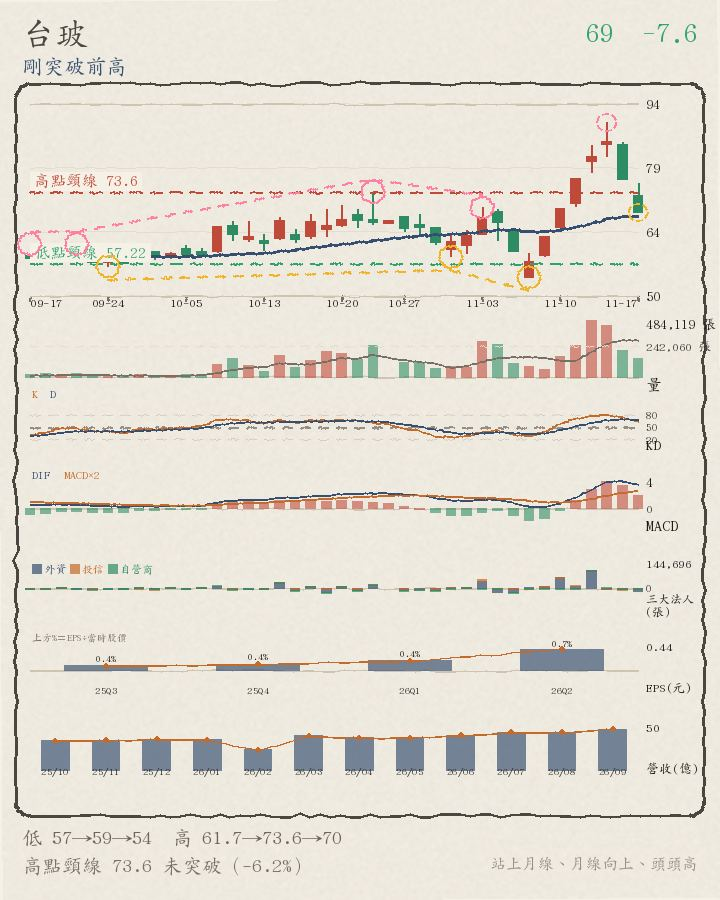
今天帶量收黑、跌破月線 65.955，離高點頸線 89.5 還差 33.3%，轉折還沒走出明顯方向。
- 月線位置：收盤 59.7 在月線 65.955 之下；5 日線 58.9 也在月線之下（短均在下）；月線走平或向下、5 日線走平或向下
- 量能：成交量是 20 日均量的 2.14 倍，比 20 日均量大不少；收黑卻量增，量價背離
- 關鍵價位：高點頸線 89.5 還沒突破，差 33.3%；最近轉折高點 89.5（低於 33.3%）；最近轉折低點 49.5（高於 20.6%）
- 轉折結構：低點 58.8、54.1、49.5 與高點 73.6、70、89.5 都沒有明顯遞增，屬於區間震盪或轉弱；還沒確認的轉折低點 11-26 57.3；還沒確認的轉折高點 11-25 69.6（圖上虛線小圈）
區間或轉弱 成交金額 239.02 億・全榜第 5 名（上市第 5 名）
好條件 2/4：在月線之下、月線下彎
不好條件 2/5：量價攻擊（收紅＋大量）、外資賣超

今天帶量收紅、跌破月線 1148，離高點頸線 2115 還差 47.0%，轉折還沒走出明顯方向。
- 月線位置：收盤 1120 在月線 1148 之下；5 日線 1030 也在月線之下（短均在下）；月線走平或向下、5 日線走平或向下
- 量能：成交量是 20 日均量的 1.07 倍，比 20 日均量大一些；收紅又量增，量價配合
- 關鍵價位：高點頸線 2115 還沒突破，差 47.0%；最近轉折高點 1335（低於 16.1%）；最近轉折低點 864（高於 29.6%）
- 轉折結構：低點 1810、1020、864 與高點 1965、2115、1335 都沒有明顯遞增，屬於區間震盪或轉弱；還沒確認的轉折低點 11-11 1230、11-25 989；還沒確認的轉折高點 11-19 1115、11-26 1140（圖上虛線小圈）
區間或轉弱 成交金額 219.69 億・全榜第 6 名（上市第 6 名）
好條件 2/4：在月線之下、月線下彎
不好條件 2/5：量價攻擊（收紅＋大量）、外資賣超

今天帶量收紅、跌破月線 743.35，離高點頸線 1420 還差 54.7%，轉折還沒走出明顯方向。
- 月線位置：收盤 643 在月線 743.35 之下；5 日線 587.2 也在月線之下（短均在下）；月線走平或向下、5 日線走平或向下
- 量能：成交量是 20 日均量的 1.25 倍，比 20 日均量大不少；收紅又量增，量價配合
- 關鍵價位：高點頸線 1420 還沒突破，差 54.7%；最近轉折高點 894（低於 28.1%）；最近轉折低點 484.5（高於 32.7%）
- 轉折結構：低點 1040、720、484.5 與高點 1420、1180、894 都沒有明顯遞增，屬於區間震盪或轉弱；還沒確認的轉折低點 11-25 555；還沒確認的轉折高點 11-18 691、11-26 643（圖上虛線小圈）
區間或轉弱 成交金額 210.77 億・全榜第 7 名（上市第 7 名）
好條件 2/4：在月線之下、月線下彎
不好條件 2/5：量價攻擊（收紅＋大量）、外資賣超

今天帶量收紅、跌破月線 656.325，離高點頸線 1150 還差 53.9%，轉折還沒走出明顯方向。
- 月線位置：收盤 530 在月線 656.325 之下；5 日線 495.3 也在月線之下（短均在下）；月線走平或向下、5 日線走平或向下
- 量能：成交量是 20 日均量的 1.92 倍，比 20 日均量大不少；收紅又量增，量價配合
- 關鍵價位：高點頸線 1150 還沒突破，差 53.9%；最近轉折高點 1065（低於 50.2%）；最近轉折低點 423（高於 25.3%）
- 轉折結構：低點 666、666、423 與高點 835、1150、1065 都沒有明顯遞增，屬於區間震盪或轉弱；還沒確認的轉折低點 11-25 463；還沒確認的轉折高點 11-18 596、11-25 549（圖上虛線小圈）
區間或轉弱 成交金額 204.54 億・全榜第 8 名（上市第 8 名）
好條件 2/4：在月線之下、月線下彎
不好條件 1/5：外資賣超

今天收紅、但成交量比平均少、跌破月線 263.225，離高點頸線 325.5 還差 25.0%，轉折還沒走出明顯方向。
- 月線位置：收盤 244 在月線 263.225 之下；5 日線 230.4 也在月線之下（短均在下）；月線走平或向下、5 日線走平或向下
- 量能：成交量是 20 日均量的 0.85 倍，比 20 日均量少一些；收紅但量縮，量價背離
- 關鍵價位：高點頸線 325.5 還沒突破，差 25.0%；最近轉折高點 325.5（低於 25.0%）；最近轉折低點 196（高於 24.5%）
- 轉折結構：低點 295、224.5、196 與高點 325.5、325、325.5 都沒有明顯遞增，屬於區間震盪或轉弱；還沒確認的轉折低點 11-25 224.5；還沒確認的轉折高點 11-18 280、11-25 250.5（圖上虛線小圈）
區間或轉弱 成交金額 192.93 億・全榜第 9 名（上市第 9 名）
好條件 2/4：在月線之下、月線下彎
不好條件 2/5：量價攻擊（收紅＋大量）、外資賣超
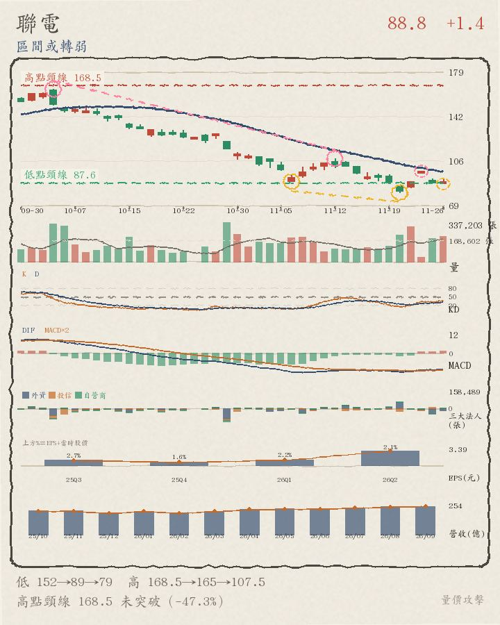
今天帶量收紅、跌破月線 96.74，離高點頸線 168.5 還差 47.3%，轉折還沒走出明顯方向。
- 月線位置：收盤 88.8 在月線 96.74 之下；5 日線 88.38 也在月線之下（短均在下）；月線走平或向下、5 日線走平或向下
- 量能：成交量是 20 日均量的 1.32 倍，比 20 日均量大不少；收紅又量增，量價配合
- 關鍵價位：高點頸線 168.5 還沒突破，差 47.3%；最近轉折高點 107.5（低於 17.4%）；最近轉折低點 79.4（高於 11.8%）
- 轉折結構：低點 151.5、88.6、79.4 與高點 168.5、165、107.5 都沒有明顯遞增，屬於區間震盪或轉弱；還沒確認的轉折低點 11-26 86.6；還沒確認的轉折高點 11-24 97.1（圖上虛線小圈）
區間或轉弱 成交金額 164.41 億・全榜第 10 名（上市第 10 名）
好條件 2/4：在月線之下、月線下彎
不好條件 2/5：量價攻擊（收紅＋大量）、外資賣超

今天帶量收紅、跌破月線 562.05，離高點頸線 709 還差 27.9%，轉折還沒走出明顯方向。
- 月線位置：收盤 511 在月線 562.05 之下；5 日線 493.6 也在月線之下（短均在下）；月線走平或向下、5 日線走平或向下
- 量能：成交量是 20 日均量的 1.21 倍，比 20 日均量大不少；收紅又量增，量價配合
- 關鍵價位：高點頸線 709 還沒突破，差 27.9%；最近轉折高點 630（低於 18.9%）；最近轉折低點 451（高於 13.3%）
- 轉折結構：低點 639、515、451 與高點 699、709、630 都沒有明顯遞增，屬於區間震盪或轉弱；還沒確認的轉折低點 11-17 506、11-25 477；還沒確認的轉折高點 11-24 530、11-26 522（圖上虛線小圈）
區間或轉弱 成交金額 143.81 億・全榜第 11 名（上市第 11 名）
好條件 1/4：月線下彎
不好條件 3/5：站上月線、量價攻擊（收紅＋大量）、外資賣超

今天帶量收紅、站上月線 915.45，離高點頸線 1295 還差 23.2%，轉折還沒走出明顯方向。
- 月線位置：收盤 995 在月線 915.45 之上；5 日線 850.6 也在月線之下（短均在下）；月線走平或向下、5 日線走平或向下
- 量能：成交量是 20 日均量的 1.40 倍，比 20 日均量大不少；收紅又量增，量價配合
- 關鍵價位：高點頸線 1295 還沒突破，差 23.2%；最近轉折高點 1085（低於 8.3%）；最近轉折低點 657（高於 51.4%）
- 轉折結構：低點 1120、782、657 與高點 1295、1190、1085 都沒有明顯遞增，屬於區間震盪或轉弱；還沒確認的轉折低點 11-12 968、11-25 827；還沒確認的轉折高點 11-18 906、11-26 995（圖上虛線小圈）
世芯-KY 3661 上市
3735 +130.0
區間或轉弱 成交金額 130.46 億・全榜第 12 名（上市第 12 名）
好條件 0/4：無
不好條件 4/5：站上月線、月線向上、量價攻擊（收紅＋大量）、外資賣超

今天帶量收紅、站上月線 3483.25，離高點頸線 4085 還差 8.6%，轉折還沒走出明顯方向。
- 月線位置：收盤 3735 在月線 3483.25 之上；5 日線 3611 也在月線之上（短均在上）；月線向上、5 日線走平或向下
- 量能：成交量是 20 日均量的 1.12 倍，比 20 日均量大一些；收紅又量增，量價配合
- 關鍵價位：高點頸線 4085 還沒突破，差 8.6%；最近轉折高點 4085（低於 8.6%）；最近轉折低點 3210（高於 16.4%）
- 轉折結構：低點 3260、2665、3210 與高點 3835、3825、4085 都沒有明顯遞增，屬於區間震盪或轉弱；還沒確認的轉折低點 11-18 3440、11-25 3530；還沒確認的轉折高點 11-19 4020、11-25 3970（圖上虛線小圈）
區間或轉弱 成交金額 123.3 億・全榜第 14 名（上市第 13 名）
好條件 3/4：在月線之下、月線下彎、外資買超
不好條件 0/5：無
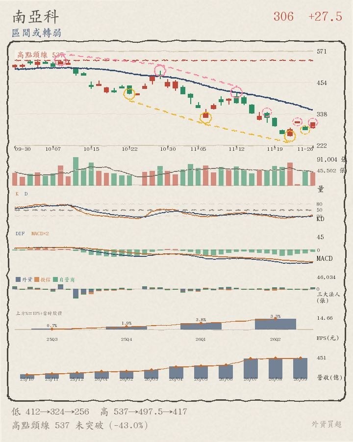
今天收紅、但成交量比平均少、跌破月線 352.75，離高點頸線 537 還差 43.0%，轉折還沒走出明顯方向。
- 月線位置：收盤 306 在月線 352.75 之下；5 日線 287.8 也在月線之下（短均在下）；月線走平或向下、5 日線走平或向下
- 量能：成交量是 20 日均量的 0.82 倍，比 20 日均量少很多；收紅但量縮，量價背離
- 關鍵價位：高點頸線 537 還沒突破，差 43.0%；最近轉折高點 417（低於 26.6%）；最近轉折低點 255.5（高於 19.8%）
- 轉折結構：低點 412、324、255.5 與高點 537、497.5、417 都沒有明顯遞增，屬於區間震盪或轉弱；還沒確認的轉折低點 11-25 278.5；還沒確認的轉折高點 11-24 309、11-26 306（圖上虛線小圈）
區間或轉弱 成交金額 115.72 億・全榜第 15 名（上市第 14 名）
好條件 3/4：在月線之下、月線下彎、外資買超
不好條件 0/5：無

今天收紅、跌破月線 229.475，離高點頸線 266.5 還差 18.8%，轉折還沒走出明顯方向。
- 月線位置：收盤 216.5 在月線 229.475 之下；5 日線 213.1 也在月線之下（短均在下）；月線走平或向下、5 日線走平或向下
- 量能：成交量是 20 日均量的 0.99 倍，跟 20 日均量差不多
- 關鍵價位：高點頸線 266.5 還沒突破，差 18.8%；最近轉折高點 247.5（低於 12.5%）；最近轉折低點 212.5（高於 1.9%）
- 轉折結構：低點 247、237、212.5 與高點 266.5、253.5、247.5 都沒有明顯遞增，屬於區間震盪或轉弱；還沒確認的轉折低點 11-23 205、11-25 204；還沒確認的轉折高點 11-24 226.5、11-26 220（圖上虛線小圈）
區間或轉弱 成交金額 94.42 億・全榜第 17 名（上市第 15 名）
好條件 3/4：在月線之下、月線下彎、外資買超
不好條件 0/5：無
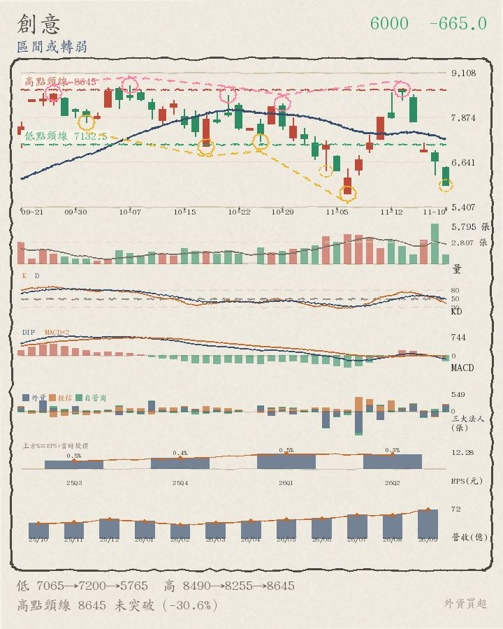
今天收紅、但成交量比平均少、跌破月線 6683.5，離高點頸線 8645 還差 37.7%，轉折還沒走出明顯方向。
- 月線位置：收盤 5390 在月線 6683.5 之下；5 日線 5322 也在月線之下（短均在下）；月線走平或向下、5 日線走平或向下
- 量能：成交量是 20 日均量的 0.63 倍，比 20 日均量少很多；收紅但量縮，量價背離
- 關鍵價位：高點頸線 8645 還沒突破，差 37.7%；最近轉折高點 8645（低於 37.7%）；最近轉折低點 4860（高於 10.9%）
- 轉折結構：低點 7200、5765、4860 與高點 8490、8255、8645 都沒有明顯遞增，屬於區間震盪或轉弱；還沒確認的轉折低點 11-26 4950；還沒確認的轉折高點 11-24 5630、11-26 5510（圖上虛線小圈）
區間或轉弱 成交金額 90.7 億・全榜第 18 名（上市第 16 名）
好條件 3/4：在月線之下、月線下彎、外資買超
不好條件 0/5：無

今天收紅、但成交量比平均少、跌破月線 387.8，離高點頸線 686 還差 50.5%，轉折還沒走出明顯方向。
- 月線位置：收盤 339.5 在月線 387.8 之下；5 日線 319.1 也在月線之下（短均在下）；月線走平或向下、5 日線走平或向下
- 量能：成交量是 20 日均量的 0.60 倍，比 20 日均量少很多；收紅但量縮，量價背離
- 關鍵價位：高點頸線 686 還沒突破，差 50.5%；最近轉折高點 442（低於 23.2%）；最近轉折低點 288.5（高於 17.7%）
- 轉折結構：低點 506、364.5、288.5 與高點 601、686、442 都沒有明顯遞增，屬於區間震盪或轉弱；還沒確認的轉折低點 11-12 405.5、11-25 307；還沒確認的轉折高點 11-24 341、11-26 339.5（圖上虛線小圈）
高點墊高、底部不穩 成交金額 89.1 億・全榜第 19 名（上市第 17 名）
好條件 0/4：無
不好條件 4/5：站上月線、月線向上、量價攻擊（收紅＋大量）、外資賣超

今天帶量收紅、站上月線 162.575，離高點頸線 171 還差 2.6%，高點還在墊高（但底部沒同步墊高）。
- 月線位置：收盤 166.5 在月線 162.575 之上；5 日線 164.3 也在月線之上（短均在上）；月線向上、5 日線走平或向下
- 量能：成交量是 20 日均量的 2.34 倍，比 20 日均量大不少；收紅又量增，量價配合
- 關鍵價位：高點頸線 171 還沒突破，差 2.6%；最近轉折高點 171（低於 2.6%）；最近轉折低點 160（高於 4.1%）
- 轉折結構：高點 147、166.5、171 墊高 16.3%（頭頭高），但低點 156.5、156.5、160 沒有同步墊高；還沒確認的轉折低點 11-17 162、11-24 160.5；還沒確認的轉折高點 11-24 170.5、11-26 170（圖上虛線小圈）
剛突破前高 成交金額 88.87 億・全榜第 20 名（上市第 18 名）
好條件 1/4：月線下彎
不好條件 3/5：站上月線、量價攻擊（收紅＋大量）、外資賣超

今天帶量收紅、站上月線 1453.75，離高點頸線 1875 還差 13.6%，高點還在墊高（但底部沒同步墊高）。
- 月線位置：收盤 1620 在月線 1453.75 之上；5 日線 1432 也在月線之下（短均在下）；月線走平或向下、5 日線向上
- 量能：成交量是 20 日均量的 1.10 倍，比 20 日均量大一些；收紅又量增，量價配合
- 關鍵價位：高點頸線 1875 還沒突破，差 13.6%；最近轉折高點 1535（高於 5.5%）；最近轉折低點 1200（高於 35.0%）
- 轉折結構：高點 1875、1665、1535 墊高 5.5%（頭頭高），但低點 1910、1245、1200 沒有同步墊高；還沒確認的轉折低點 11-17 1290、11-25 1355；還沒確認的轉折高點 11-26 1620（圖上虛線小圈）
區間或轉弱 成交金額 82.81 億・全榜第 22 名（上市第 19 名）
好條件 3/4：在月線之下、月線下彎、外資買超
不好條件 1/5：量價攻擊（收紅＋大量）

今天帶量收紅、跌破月線 501.85，離高點頸線 885 還差 51.5%，轉折還沒走出明顯方向。
- 月線位置：收盤 429 在月線 501.85 之下；5 日線 399.1 也在月線之下（短均在下）；月線走平或向下、5 日線走平或向下
- 量能：成交量是 20 日均量的 1.14 倍，比 20 日均量大一些；收紅又量增，量價配合
- 關鍵價位：高點頸線 885 還沒突破，差 51.5%；最近轉折高點 602（低於 28.7%）；最近轉折低點 321.5（高於 33.4%）
- 轉折結構：低點 721、481.5、321.5 與高點 858、885、602 都沒有明顯遞增，屬於區間震盪或轉弱；還沒確認的轉折低點 11-12 522、11-25 387；還沒確認的轉折高點 11-25 439（圖上虛線小圈）
區間或轉弱 成交金額 77.89 億・全榜第 23 名（上市第 20 名）
好條件 3/4：在月線之下、月線下彎、外資買超
不好條件 0/5：無

今天收紅、跌破月線 895.8，離高點頸線 1560 還差 53.1%，轉折還沒走出明顯方向。
- 月線位置：收盤 731 在月線 895.8 之下；5 日線 686.4 也在月線之下（短均在下）；月線走平或向下、5 日線走平或向下
- 量能：成交量是 20 日均量的 0.97 倍，跟 20 日均量差不多
- 關鍵價位：高點頸線 1560 還沒突破，差 53.1%；最近轉折高點 1080（低於 32.3%）；最近轉折低點 569（高於 28.5%）
- 轉折結構：低點 1050、867、569 與高點 1560、1400、1080 都沒有明顯遞增，屬於區間震盪或轉弱；還沒確認的轉折低點 11-12 972、11-25 664；還沒確認的轉折高點 11-18 846、11-25 755（圖上虛線小圈）
區間或轉弱 成交金額 73.12 億・全榜第 24 名（上市第 21 名）
好條件 2/4：月線下彎、外資買超
不好條件 1/5：站上月線

今天收紅、但成交量比平均少、站上月線 2692.5，離高點頸線 3700 還差 24.5%，轉折還沒走出明顯方向。
- 月線位置：收盤 2795 在月線 2692.5 之上；5 日線 2502 也在月線之下（短均在下）；月線走平或向下、5 日線走平或向下
- 量能：成交量是 20 日均量的 0.72 倍，比 20 日均量少很多；收紅但量縮，量價背離
- 關鍵價位：高點頸線 3700 還沒突破，差 24.5%；最近轉折高點 3060（低於 8.7%）；最近轉折低點 2005（高於 39.4%）
- 轉折結構：低點 2310、2310、2005 與高點 3700、3450、3060 都沒有明顯遞增，屬於區間震盪或轉弱；還沒確認的轉折低點 11-18 2440、11-25 2360；還沒確認的轉折高點 11-18 2715、11-26 2795（圖上虛線小圈）
貿聯-KY 3665 上市
1790 +160.0
剛突破前高 成交金額 70.89 億・全榜第 25 名（上市第 22 名）
好條件 1/4：月線下彎
不好條件 2/5：站上月線、外資賣超

今天收紅、站上月線 1517.25，離高點頸線 2685 還差 33.3%，高點還在墊高（但底部沒同步墊高）。
- 月線位置：收盤 1790 在月線 1517.25 之上；5 日線 1544 也在月線之上（短均在上）；月線走平或向下、5 日線向上
- 量能：成交量是 20 日均量的 1.00 倍，跟 20 日均量差不多
- 關鍵價位：高點頸線 2685 還沒突破，差 33.3%；最近轉折高點 1630（高於 9.8%）；最近轉折低點 1240（高於 44.4%）
- 轉折結構：高點 2685、2080、1630 墊高 9.8%（頭頭高），但低點 1810、1295、1240 沒有同步墊高；還沒確認的轉折低點 11-17 1365、11-25 1540；還沒確認的轉折高點 11-19 1590、11-26 1790（圖上虛線小圈）
區間或轉弱 成交金額 69 億・全榜第 26 名（上市第 23 名）
好條件 3/4：在月線之下、月線下彎、外資買超
不好條件 1/5：量價攻擊（收紅＋大量）

今天帶量收紅、跌破月線 255.125，離高點頸線 274.5 還差 7.5%，轉折還沒走出明顯方向。
- 月線位置：收盤 254 在月線 255.125 之下；5 日線 246.2 也在月線之下（短均在下）；月線走平或向下、5 日線走平或向下
- 量能：成交量是 20 日均量的 1.83 倍，比 20 日均量大不少；收紅又量增，量價配合
- 關鍵價位：高點頸線 274.5 還沒突破，差 7.5%；最近轉折高點 264.5（低於 4.0%）；最近轉折低點 230（高於 10.4%）
- 轉折結構：低點 254、236.5、230 與高點 270.5、274.5、264.5 都沒有明顯遞增，屬於區間震盪或轉弱；還沒確認的轉折低點 11-13 251、11-17 253；還沒確認的轉折高點 11-24 257、11-26 258（圖上虛線小圈）
區間或轉弱 成交金額 68.65 億・全榜第 27 名（上市第 24 名）
好條件 2/4：在月線之下、月線下彎
不好條件 2/5：量價攻擊（收紅＋大量）、外資賣超
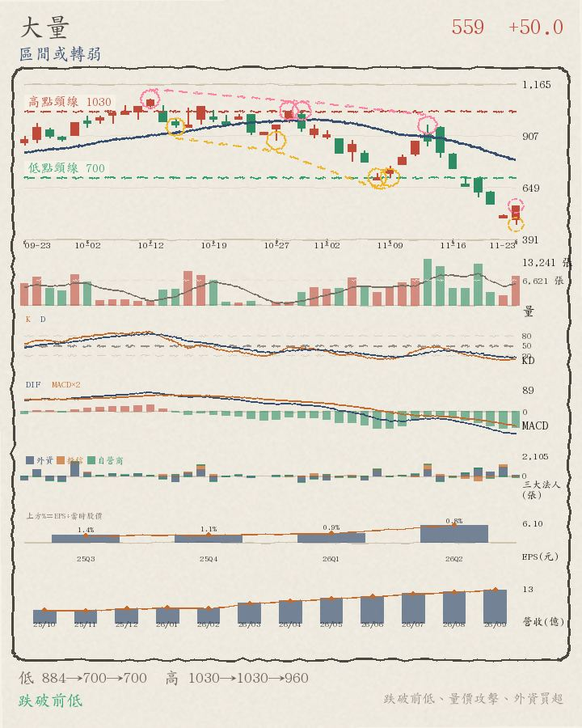
今天帶量收紅、跌破月線 732.05，離高點頸線 1030 還差 39.8%，轉折還沒走出明顯方向。
- 月線位置：收盤 620 在月線 732.05 之下；5 日線 580 也在月線之下（短均在下）；月線走平或向下、5 日線走平或向下
- 量能：成交量是 20 日均量的 1.79 倍，比 20 日均量大不少；收紅又量增，量價配合
- 關鍵價位：高點頸線 1030 還沒突破，差 39.8%；最近轉折高點 960（低於 35.4%）；最近轉折低點 466（高於 33.0%）
- 轉折結構：低點 700、700、466 與高點 1030、1030、960 都沒有明顯遞增，屬於區間震盪或轉弱；還沒確認的轉折低點 11-25 562；還沒確認的轉折高點 11-25 655（圖上虛線小圈）
區間或轉弱 成交金額 68.42 億・全榜第 28 名（上市第 25 名）
好條件 2/4：在月線之下、月線下彎
不好條件 2/5：量價攻擊（收紅＋大量）、外資賣超

今天帶量收紅、跌破月線 206.725，離高點頸線 310 還差 39.4%，轉折還沒走出明顯方向。
- 月線位置：收盤 188 在月線 206.725 之下；5 日線 169.6 也在月線之下（短均在下）；月線走平或向下、5 日線走平或向下
- 量能：成交量是 20 日均量的 1.45 倍，比 20 日均量大不少；收紅又量增，量價配合
- 關鍵價位：高點頸線 310 還沒突破，差 39.4%；最近轉折高點 235（低於 20.0%）；最近轉折低點 146（高於 28.8%）
- 轉折結構：低點 255、201、146 與高點 310、284.5、235 都沒有明顯遞增，屬於區間震盪或轉弱；還沒確認的轉折低點 11-17 173.5、11-25 161.5；還沒確認的轉折高點 11-18 194、11-26 189.5（圖上虛線小圈）
區間或轉弱 成交金額 66.87 億・全榜第 29 名（上市第 26 名）
好條件 3/4：在月線之下、月線下彎、外資買超
不好條件 1/5：量價攻擊（收紅＋大量）
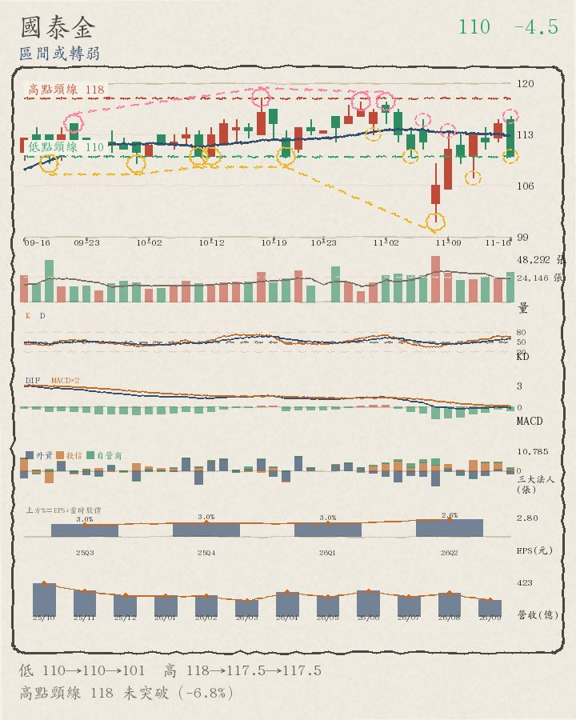
今天帶量收紅、跌破月線 108.52，離高點頸線 117.5 還差 11.1%，轉折還沒走出明顯方向。
- 月線位置：收盤 104.5 在月線 108.52 之下；5 日線 100.28 也在月線之下（短均在下）；月線走平或向下、5 日線走平或向下
- 量能：成交量是 20 日均量的 1.94 倍，比 20 日均量大不少；收紅又量增，量價配合
- 關鍵價位：高點頸線 117.5 還沒突破，差 11.1%；最近轉折高點 115.5（低於 9.5%）；最近轉折低點 91.5（高於 14.2%）
- 轉折結構：低點 110、101、91.5 與高點 117.5、117.5、115.5 都沒有明顯遞增，屬於區間震盪或轉弱；還沒確認的轉折低點 11-17 106、11-25 96.2；還沒確認的轉折高點 11-24 104.5、11-26 104.5（圖上虛線小圈）
臻鼎-KY 4958 上市
355.5 +27.0
區間或轉弱 成交金額 63.53 億・全榜第 30 名（上市第 27 名）
好條件 3/4：在月線之下、月線下彎、外資買超
不好條件 0/5：無

今天收紅、但成交量比平均少、跌破月線 397.9，離高點頸線 614 還差 42.1%，轉折還沒走出明顯方向。
- 月線位置：收盤 355.5 在月線 397.9 之下；5 日線 338 也在月線之下（短均在下）；月線走平或向下、5 日線走平或向下
- 量能：成交量是 20 日均量的 0.73 倍，比 20 日均量少很多；收紅但量縮，量價背離
- 關鍵價位：高點頸線 614 還沒突破，差 42.1%；最近轉折高點 466.5（低於 23.8%）；最近轉折低點 290（高於 22.6%）
- 轉折結構：低點 518、355、290 與高點 613、614、466.5 都沒有明顯遞增，屬於區間震盪或轉弱；還沒確認的轉折低點 11-12 429、11-25 328.5；還沒確認的轉折高點 11-18 397、11-25 367.5（圖上虛線小圈）
區間或轉弱 成交金額 62.58 億・全榜第 32 名（上市第 28 名）
好條件 3/4：在月線之下、月線下彎、外資買超
不好條件 1/5：量價攻擊（收紅＋大量）

今天帶量收紅、跌破月線 179.125，離高點頸線 266 還差 36.8%，轉折還沒走出明顯方向。
- 月線位置：收盤 168 在月線 179.125 之下；5 日線 159.5 也在月線之下（短均在下）；月線走平或向下、5 日線走平或向下
- 量能：成交量是 20 日均量的 1.26 倍，比 20 日均量大不少；收紅又量增，量價配合
- 關鍵價位：高點頸線 266 還沒突破，差 36.8%；最近轉折高點 215.5（低於 22.0%）；最近轉折低點 139.5（高於 20.4%）
- 轉折結構：低點 228、149、139.5 與高點 261、266、215.5 都沒有明顯遞增，屬於區間震盪或轉弱；還沒確認的轉折低點 11-18 168.5、11-25 153；還沒確認的轉折高點 11-18 194.5、11-24 169.5（圖上虛線小圈）
區間或轉弱 成交金額 61.87 億・全榜第 33 名（上市第 29 名）
好條件 2/4：在月線之下、月線下彎
不好條件 2/5：量價攻擊（收紅＋大量）、外資賣超

今天帶量收紅、跌破月線 856.8，離高點頸線 1330 還差 42.3%，轉折還沒走出明顯方向。
- 月線位置：收盤 767 在月線 856.8 之下；5 日線 706.6 也在月線之下（短均在下）；月線走平或向下、5 日線走平或向下
- 量能：成交量是 20 日均量的 1.18 倍，比 20 日均量大不少；收紅又量增，量價配合
- 關鍵價位：高點頸線 1330 還沒突破，差 42.3%；最近轉折高點 1085（低於 29.3%）；最近轉折低點 596（高於 28.7%）
- 轉折結構：低點 1005、762、596 與高點 1330、1330、1085 都沒有明顯遞增，屬於區間震盪或轉弱；還沒確認的轉折低點 11-25 681；還沒確認的轉折高點 11-25 785（圖上虛線小圈）
區間或轉弱 成交金額 60.22 億・全榜第 34 名（上市第 30 名）
好條件 2/4：在月線之下、月線下彎
不好條件 2/5：量價攻擊（收紅＋大量）、外資賣超

今天帶量收紅、跌破月線 1265.7，離高點頸線 2110 還差 48.1%，轉折還沒走出明顯方向。
- 月線位置：收盤 1095 在月線 1265.7 之下；5 日線 994.8 也在月線之下（短均在下）；月線走平或向下、5 日線走平或向下
- 量能：成交量是 20 日均量的 1.47 倍，比 20 日均量大不少；收紅又量增，量價配合
- 關鍵價位：高點頸線 2110 還沒突破，差 48.1%；最近轉折高點 1505（低於 27.2%）；最近轉折低點 835（高於 31.1%）
- 轉折結構：低點 1945、1190、835 與高點 2110、2070、1505 都沒有明顯遞增，屬於區間震盪或轉弱；還沒確認的轉折低點 11-25 963；還沒確認的轉折高點 11-25 1115（圖上虛線小圈）
區間或轉弱 成交金額 59.14 億・全榜第 35 名（上市第 31 名）
好條件 2/4：在月線之下、月線下彎
不好條件 1/5：外資賣超

今天收紅、但成交量比平均少、跌破月線 1583，離高點頸線 2335 還差 32.8%，轉折還沒走出明顯方向。
- 月線位置：收盤 1570 在月線 1583 之下；5 日線 1442 也在月線之下（短均在下）；月線走平或向下、5 日線走平或向下
- 量能：成交量是 20 日均量的 0.95 倍，跟 20 日均量差不多；收紅但量縮，量價背離
- 關鍵價位：高點頸線 2335 還沒突破，差 32.8%；最近轉折高點 1990（低於 21.1%）；最近轉折低點 1275（高於 23.1%）
- 轉折結構：低點 1795、1485、1275 與高點 2335、2020、1990 都沒有明顯遞增，屬於區間震盪或轉弱；還沒確認的轉折低點 11-17 1425、11-25 1360；還沒確認的轉折高點 11-24 1510、11-26 1570（圖上虛線小圈）
區間或轉弱 成交金額 58.1 億・全榜第 36 名（上市第 32 名）
好條件 1/4：月線下彎
不好條件 3/5：站上月線、量價攻擊（收紅＋大量）、外資賣超
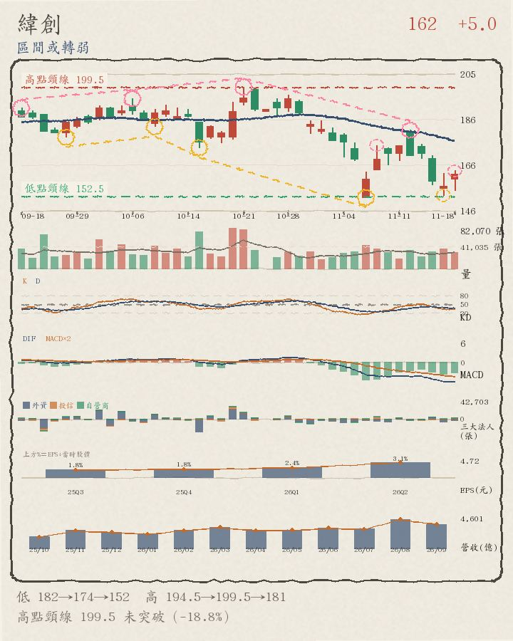
今天帶量收紅、站上月線 165.625，離高點頸線 199.5 還差 16.3%，轉折還沒走出明顯方向。
- 月線位置：收盤 167 在月線 165.625 之上；5 日線 155.5 也在月線之下（短均在下）；月線走平或向下、5 日線走平或向下
- 量能：成交量是 20 日均量的 1.19 倍，比 20 日均量大不少；收紅又量增，量價配合
- 關鍵價位：高點頸線 199.5 還沒突破，差 16.3%；最近轉折高點 181（低於 7.7%）；最近轉折低點 143（高於 16.8%）
- 轉折結構：低點 173.5、152、143 與高點 194.5、199.5、181 都沒有明顯遞增，屬於區間震盪或轉弱；還沒確認的轉折低點 11-17 153、11-25 148；還沒確認的轉折高點 11-24 163、11-26 167（圖上虛線小圈）
區間或轉弱 成交金額 56.23 億・全榜第 38 名（上市第 33 名）
好條件 3/4：在月線之下、月線下彎、外資買超
不好條件 0/5：無

今天收紅、但成交量比平均少、跌破月線 121.785，離高點頸線 184 還差 43.8%，轉折還沒走出明顯方向。
- 月線位置：收盤 103.5 在月線 121.785 之下；5 日線 97.54 也在月線之下（短均在下）；月線走平或向下、5 日線走平或向下
- 量能：成交量是 20 日均量的 0.80 倍，比 20 日均量少很多；收紅但量縮，量價背離
- 關鍵價位：高點頸線 184 還沒突破，差 43.8%；最近轉折高點 142（低於 27.1%）；最近轉折低點 88.2（高於 17.3%）
- 轉折結構：低點 151、115、88.2 與高點 184、178.5、142 都沒有明顯遞增，屬於區間震盪或轉弱；還沒確認的轉折低點 11-11 127、11-25 94.5；還沒確認的轉折高點 11-24 105、11-26 103.5（圖上虛線小圈）
區間或轉弱 成交金額 54.77 億・全榜第 39 名（上市第 34 名）
好條件 2/4：在月線之下、月線下彎
不好條件 1/5：外資賣超
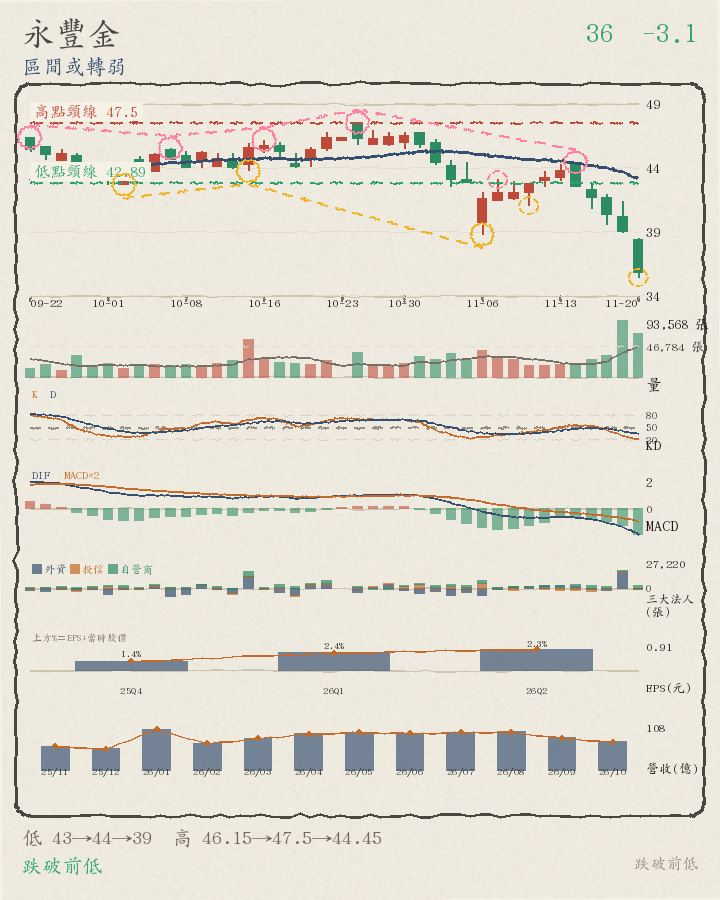
今天帶量收黑、跌破月線 41.367，離高點頸線 47.5 還差 25.2%，轉折還沒走出明顯方向。
- 月線位置：收盤 35.55 在月線 41.367 之下；5 日線 36.99 也在月線之下（短均在下）；月線走平或向下、5 日線走平或向下
- 量能：成交量是 20 日均量的 3.61 倍，比 20 日均量大不少；收黑卻量增，量價背離
- 關鍵價位：高點頸線 47.5 還沒突破，差 25.2%；最近轉折高點 44.45（低於 20.0%）；最近轉折低點 34.5（高於 3.0%）
- 轉折結構：低點 43.8、38.9、34.5 與高點 46.15、47.5、44.45 都沒有明顯遞增，屬於區間震盪或轉弱；還沒確認的轉折低點 11-11 41.1、11-26 35.2；還沒確認的轉折高點 11-24 40.35（圖上虛線小圈）
底部墊高、未過前高 成交金額 53.59 億・全榜第 40 名（上市第 35 名）
好條件 3/4：跌破前低、在月線之下、月線下彎
不好條件 1/5：外資賣超

今天帶量收黑、跌破月線 53.143，跌破前一個轉折低點（高點頸線 56.5 還在收盤上方），底部還在墊高（但高點沒同步創高）。
- 月線位置：收盤 48.25 在月線 53.143 之下；5 日線 50.95 也在月線之下（短均在下）；月線走平或向下、5 日線走平或向下
- 量能：成交量是 20 日均量的 2.92 倍，比 20 日均量大不少；收黑卻量增，量價背離
- 關鍵價位：高點頸線 56.5 還沒突破、還在收盤上方 14.6%；最近轉折高點 56.5（低於 14.6%）；最近轉折低點 50.4（低於 4.3%）
- 轉折結構：低點 48.35、49、50.4 墊高 4.2%（底底高），但高點 56、56、56.5 沒有同步創高；還沒確認的轉折低點 11-23 49.65、11-26 48.25；還沒確認的轉折高點 11-16 56.3、11-24 55（圖上虛線小圈）
區間或轉弱 成交金額 49.61 億・全榜第 41 名（上市第 36 名）
好條件 3/4：在月線之下、月線下彎、外資買超
不好條件 0/5：無

今天收紅、跌破月線 283.825，離高點頸線 349 還差 19.5%，轉折還沒走出明顯方向。
- 月線位置：收盤 281 在月線 283.825 之下；5 日線 266.7 也在月線之下（短均在下）；月線走平或向下、5 日線向上
- 量能：成交量是 20 日均量的 0.99 倍，跟 20 日均量差不多
- 關鍵價位：高點頸線 349 還沒突破，差 19.5%；最近轉折高點 338（低於 16.9%）；最近轉折低點 247.5（高於 13.5%）
- 轉折結構：低點 311、272、247.5 與高點 349、337.5、338 都沒有明顯遞增，屬於區間震盪或轉弱；還沒確認的轉折低點 11-18 253、11-25 254.5；還沒確認的轉折高點 11-24 282.5、11-26 284（圖上虛線小圈）
區間或轉弱 成交金額 44.55 億・全榜第 45 名（上市第 37 名）
好條件 3/4：在月線之下、月線下彎、外資買超
不好條件 0/5：無
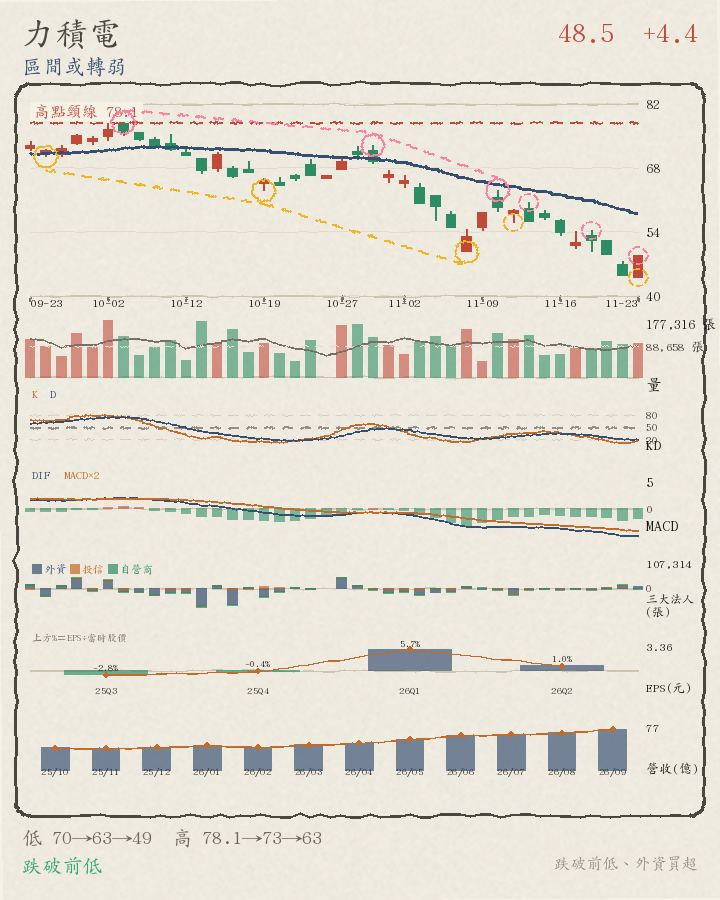
今天收紅、但成交量比平均少、跌破月線 54.975，離高點頸線 78.1 還差 34.1%，轉折還沒走出明顯方向。
- 月線位置：收盤 51.5 在月線 54.975 之下；5 日線 49.08 也在月線之下（短均在下）；月線走平或向下、5 日線走平或向下
- 量能：成交量是 20 日均量的 0.90 倍，比 20 日均量少一些；收紅但量縮，量價背離
- 關鍵價位：高點頸線 78.1 還沒突破，差 34.1%；最近轉折高點 63（低於 18.3%）；最近轉折低點 43.7（高於 17.8%）
- 轉折結構：低點 63、49.35、43.7 與高點 78.1、73、63 都沒有明顯遞增，屬於區間震盪或轉弱；還沒確認的轉折低點 11-11 55.9、11-25 48；還沒確認的轉折高點 11-24 53.3、11-26 52.7（圖上虛線小圈）
區間或轉弱 成交金額 43.22 億・全榜第 46 名（上市第 38 名）
好條件 2/4：在月線之下、月線下彎
不好條件 2/5：量價攻擊（收紅＋大量）、外資賣超

今天帶量收紅、跌破月線 213.55，離高點頸線 304.5 還差 34.8%，轉折還沒走出明顯方向。
- 月線位置：收盤 198.5 在月線 213.55 之下；5 日線 190.5 也在月線之下（短均在下）；月線走平或向下、5 日線走平或向下
- 量能：成交量是 20 日均量的 1.28 倍，比 20 日均量大不少；收紅又量增，量價配合
- 關鍵價位：高點頸線 304.5 還沒突破，差 34.8%；最近轉折高點 243.5（低於 18.5%）；最近轉折低點 169.5（高於 17.1%）
- 轉折結構：低點 254、190.5、169.5 與高點 299.5、304.5、243.5 都沒有明顯遞增，屬於區間震盪或轉弱；還沒確認的轉折低點 11-12 227.5、11-25 184；還沒確認的轉折高點 11-18 215、11-25 205（圖上虛線小圈）
區間或轉弱 成交金額 43.05 億・全榜第 47 名（上市第 39 名）
好條件 3/4：在月線之下、月線下彎、外資買超
不好條件 1/5：量價攻擊（收紅＋大量）

今天帶量收紅、跌破月線 3816.5，離高點頸線 6515 還差 51.7%，轉折還沒走出明顯方向。
- 月線位置：收盤 3150 在月線 3816.5 之下；5 日線 3043 也在月線之下（短均在下）；月線走平或向下、5 日線走平或向下
- 量能：成交量是 20 日均量的 1.39 倍，比 20 日均量大不少；收紅又量增，量價配合
- 關鍵價位：高點頸線 6515 還沒突破，差 51.7%；最近轉折高點 4405（低於 28.5%）；最近轉折低點 2680（高於 17.5%）
- 轉折結構：低點 5035、3585、2680 與高點 6515、5610、4405 都沒有明顯遞增，屬於區間震盪或轉弱；還沒確認的轉折低點 11-25 2900；還沒確認的轉折高點 11-18 3670、11-25 3495（圖上虛線小圈）
區間或轉弱 成交金額 39.22 億・全榜第 48 名（上市第 40 名）
好條件 2/4：在月線之下、月線下彎
不好條件 1/5：外資賣超
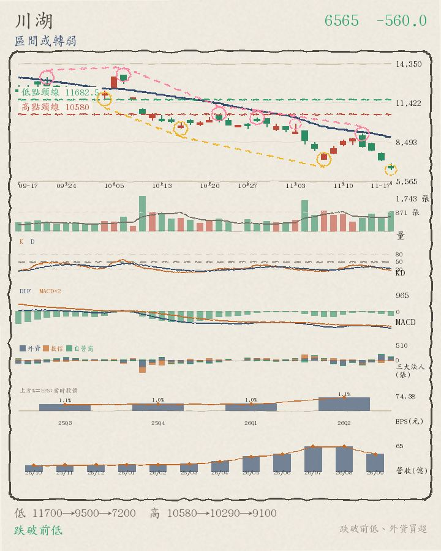
今天收紅、但成交量比平均少、跌破月線 7541，離高點頸線 10580 還差 32.4%，轉折還沒走出明顯方向。
- 月線位置：收盤 7155 在月線 7541 之下；5 日線 6170 也在月線之下（短均在下）；月線走平或向下、5 日線走平或向下
- 量能：成交量是 20 日均量的 0.75 倍，比 20 日均量少很多；收紅但量縮，量價背離
- 關鍵價位：高點頸線 10580 還沒突破，差 32.4%；最近轉折高點 9100（低於 21.4%）；最近轉折低點 4980（高於 43.7%）
- 轉折結構：低點 9500、7200、4980 與高點 10580、10290、9100 都沒有明顯遞增，屬於區間震盪或轉弱；還沒確認的轉折低點 11-25 6015；還沒確認的轉折高點 11-26 7155（圖上虛線小圈）
區間或轉弱 成交金額 38.93 億・全榜第 49 名（上市第 41 名）
好條件 3/4：在月線之下、月線下彎、外資買超
不好條件 0/5：無

今天收紅、但成交量比平均少、跌破月線 73.11，離高點頸線 80.6 還差 14.5%，轉折還沒走出明顯方向。
- 月線位置：收盤 68.9 在月線 73.11 之下；5 日線 67.3 也在月線之下（短均在下）；月線走平或向下、5 日線走平或向下
- 量能：成交量是 20 日均量的 0.95 倍，跟 20 日均量差不多；收紅但量縮，量價背離
- 關鍵價位：高點頸線 80.6 還沒突破，差 14.5%；最近轉折高點 80.6（低於 14.5%）；最近轉折低點 61.5（高於 12.0%）
- 轉折結構：低點 73.8、67.5、61.5 與高點 76.4、76.2、80.6 都沒有明顯遞增，屬於區間震盪或轉弱；還沒確認的轉折低點 11-11 72.6、11-25 63.5；還沒確認的轉折高點 11-24 70.1、11-26 68.9（圖上虛線小圈）
高點墊高、底部不穩 成交金額 38.65 億・全榜第 51 名（上市第 42 名）
好條件 1/4：月線下彎
不好條件 3/5：站上月線、量價攻擊（收紅＋大量）、外資賣超
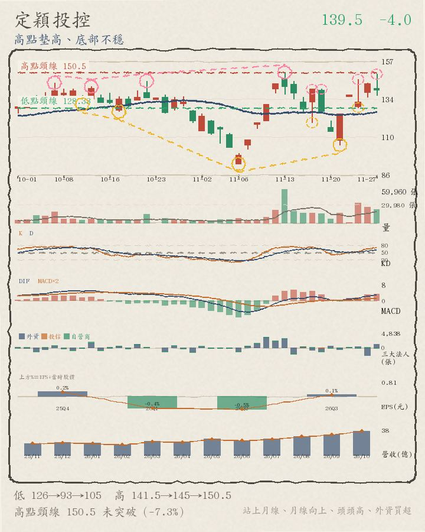
今天帶量收紅、站上月線 124.835，離高點頸線 150.5 還差 4.7%，高點還在墊高（但底部沒同步墊高）。
- 月線位置：收盤 143.5 在月線 124.835 之上；5 日線 130 也在月線之上（短均在上）；月線走平或向下、5 日線走平或向下
- 量能：成交量是 20 日均量的 2.07 倍，比 20 日均量大不少；收紅又量增，量價配合
- 關鍵價位：高點頸線 150.5 還沒突破，差 4.7%；最近轉折高點 150.5（低於 4.7%）；最近轉折低點 105（高於 36.7%）
- 轉折結構：高點 141.5、145、150.5 墊高 6.4%（頭頭高），但低點 126、93.2、105 沒有同步墊高；還沒確認的轉折低點 11-18 119、11-25 128.5；還沒確認的轉折高點 11-19 140、11-25 146（圖上虛線小圈）
區間或轉弱 成交金額 37.41 億・全榜第 52 名（上市第 43 名）
好條件 2/4：在月線之下、月線下彎
不好條件 1/5：外資賣超

今天帶量收黑、跌破月線 41.053，離高點頸線 44.8 還差 18.2%，轉折還沒走出明顯方向。
- 月線位置：收盤 36.65 在月線 41.053 之下；5 日線 37.73 也在月線之下（短均在下）；月線走平或向下、5 日線走平或向下
- 量能：成交量是 20 日均量的 2.63 倍，比 20 日均量大不少；收黑卻量增，量價背離
- 關鍵價位：高點頸線 44.8 還沒突破，差 18.2%；最近轉折高點 43.95（低於 16.6%）；最近轉折低點 36.2（高於 1.2%）
- 轉折結構：低點 40.45、38.8、36.2 與高點 42.1、44.8、43.95 都沒有明顯遞增，屬於區間震盪或轉弱；還沒確認的轉折低點 11-26 36.45；還沒確認的轉折高點 11-24 41.4（圖上虛線小圈）
區間或轉弱 成交金額 34.26 億・全榜第 53 名（上市第 44 名）
好條件 2/4：在月線之下、月線下彎
不好條件 1/5：外資賣超

今天收紅、但成交量比平均少、跌破月線 4648.25，離高點頸線 7460 還差 40.7%，轉折還沒走出明顯方向。
- 月線位置：收盤 4425 在月線 4648.25 之下；5 日線 3944 也在月線之下（短均在下）；月線走平或向下、5 日線走平或向下
- 量能：成交量是 20 日均量的 0.31 倍，比 20 日均量少很多；收紅但量縮，量價背離
- 關鍵價位：高點頸線 7460 還沒突破，差 40.7%；最近轉折高點 5560（低於 20.4%）；最近轉折低點 3400（高於 30.1%）
- 轉折結構：低點 5970、4075、3400 與高點 7460、6370、5560 都沒有明顯遞增，屬於區間震盪或轉弱；還沒確認的轉折低點 11-25 3790；還沒確認的轉折高點 11-18 4820、11-26 4425（圖上虛線小圈）
區間或轉弱 成交金額 34.18 億・全榜第 54 名（上市第 45 名）
好條件 3/4：在月線之下、月線下彎、外資買超
不好條件 0/5：無
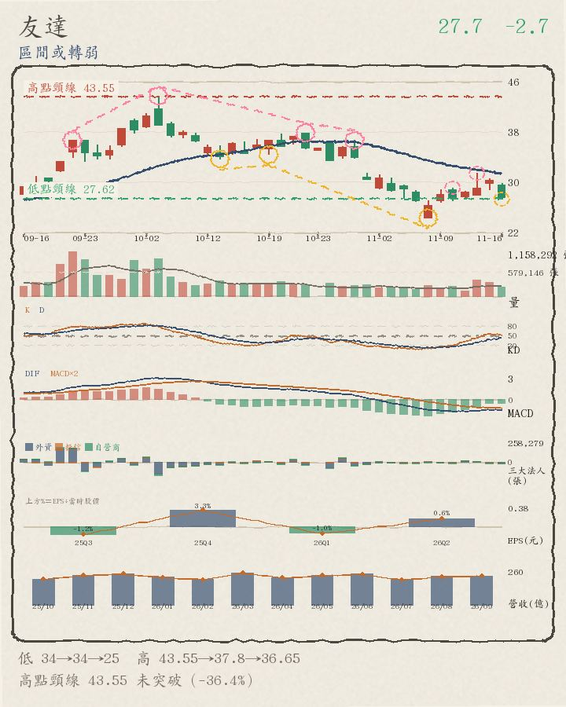
今天收紅、但成交量比平均少、跌破月線 27.448，離高點頸線 37.8 還差 32.0%，轉折還沒走出明顯方向。
- 月線位置：收盤 25.7 在月線 27.448 之下；5 日線 24.74 也在月線之下（短均在下）；月線走平或向下、5 日線走平或向下
- 量能：成交量是 20 日均量的 0.58 倍，比 20 日均量少很多；收紅但量縮，量價背離
- 關鍵價位：高點頸線 37.8 還沒突破，差 32.0%；最近轉折高點 31.5（低於 18.4%）；最近轉折低點 22.7（高於 13.2%）
- 轉折結構：低點 24.55、22.7、22.7 與高點 37.8、36.65、31.5 都沒有明顯遞增，屬於區間震盪或轉弱；還沒確認的轉折低點 11-17 26.1、11-25 23.85；還沒確認的轉折高點 11-24 26.5、11-25 26.5（圖上虛線小圈）
區間或轉弱 成交金額 30.72 億・全榜第 55 名（上市第 46 名）
好條件 2/4：在月線之下、月線下彎
不好條件 1/5：外資賣超

今天收紅、跌破月線 76.115，離高點頸線 123 還差 47.0%，轉折還沒走出明顯方向。
- 月線位置：收盤 65.2 在月線 76.115 之下；5 日線 63.04 也在月線之下（短均在下）；月線走平或向下、5 日線走平或向下
- 量能：成交量是 20 日均量的 1.00 倍，跟 20 日均量差不多
- 關鍵價位：高點頸線 123 還沒突破，差 47.0%；最近轉折高點 88.2（低於 26.1%）；最近轉折低點 57.4（高於 13.6%）
- 轉折結構：低點 99.2、71.8、57.4 與高點 123、107.5、88.2 都沒有明顯遞增，屬於區間震盪或轉弱；還沒確認的轉折低點 11-25 61.2、11-26 61.2；還沒確認的轉折高點 11-24 68、11-26 67.1（圖上虛線小圈）
區間或轉弱 成交金額 30.26 億・全榜第 56 名（上市第 47 名）
好條件 3/4：在月線之下、月線下彎、外資買超
不好條件 0/5：無

今天收紅、但成交量比平均少、跌破月線 36.97，離高點頸線 56.2 還差 41.6%，轉折還沒走出明顯方向。
- 月線位置：收盤 32.8 在月線 36.97 之下；5 日線 31.36 也在月線之下（短均在下）；月線走平或向下、5 日線走平或向下
- 量能：成交量是 20 日均量的 0.60 倍，比 20 日均量少很多；收紅但量縮，量價背離
- 關鍵價位：高點頸線 56.2 還沒突破，差 41.6%；最近轉折高點 43.3（低於 24.2%）；最近轉折低點 28.95（高於 13.3%）
- 轉折結構：低點 45.65、34.2、28.95 與高點 56.2、49.7、43.3 都沒有明顯遞增，屬於區間震盪或轉弱；還沒確認的轉折低點 11-12 38.85、11-25 29.95；還沒確認的轉折高點 11-24 33.25、11-26 33.4（圖上虛線小圈）
區間或轉弱 成交金額 30.07 億・全榜第 57 名（上市第 48 名）
好條件 3/4：在月線之下、月線下彎、外資買超
不好條件 0/5：無

今天收紅、但成交量比平均少、跌破月線 262.5，離高點頸線 431.5 還差 51.3%，轉折還沒走出明顯方向。
- 月線位置：收盤 210 在月線 262.5 之下；5 日線 198.7 也在月線之下（短均在下）；月線走平或向下、5 日線走平或向下
- 量能：成交量是 20 日均量的 0.57 倍，比 20 日均量少很多；收紅但量縮，量價背離
- 關鍵價位：高點頸線 431.5 還沒突破，差 51.3%；最近轉折高點 307（低於 31.6%）；最近轉折低點 172.5（高於 21.7%）
- 轉折結構：低點 355.5、253.5、172.5 與高點 422、431.5、307 都沒有明顯遞增，屬於區間震盪或轉弱；還沒確認的轉折低點 11-12 272、11-25 191；還沒確認的轉折高點 11-24 212、11-25 212（圖上虛線小圈）
區間或轉弱 成交金額 29.1 億・全榜第 58 名（上市第 49 名）
好條件 4/4：跌破前低、在月線之下、月線下彎、外資買超
不好條件 0/5：無
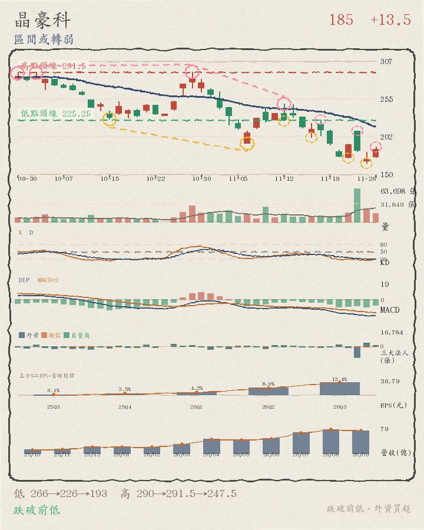
今天收紅、但成交量比平均少、跌破月線 216.075，跌破前一個轉折低點（高點頸線 291.5 還在收盤上方），轉折還沒走出明顯方向。
- 月線位置：收盤 185 在月線 216.075 之下；5 日線 181.3 也在月線之下（短均在下）；月線走平或向下、5 日線走平或向下
- 量能：成交量是 20 日均量的 0.89 倍，比 20 日均量少一些；收紅但量縮，量價背離
- 關鍵價位：高點頸線 291.5 還沒突破、還在收盤上方 36.5%；最近轉折高點 247.5（低於 25.3%）；最近轉折低點 193（低於 4.1%）
- 轉折結構：低點 265.5、226.5、193 與高點 290、291.5、247.5 都沒有明顯遞增，屬於區間震盪或轉弱；還沒確認的轉折低點 11-23 173、11-25 165.5；還沒確認的轉折高點 11-24 210.5、11-26 188（圖上虛線小圈）
區間或轉弱 成交金額 29.06 億・全榜第 59 名（上市第 50 名）
好條件 3/4：在月線之下、月線下彎、外資買超
不好條件 1/5：量價攻擊（收紅＋大量）

今天收紅、跌破月線 846.7，離高點頸線 1005 還差 20.5%，轉折還沒走出明顯方向。
- 月線位置：收盤 799 在月線 846.7 之下；5 日線 780.6 也在月線之下（短均在下）；月線走平或向下、5 日線走平或向下
- 量能：成交量是 20 日均量的 1.03 倍，跟 20 日均量差不多
- 關鍵價位：高點頸線 1005 還沒突破，差 20.5%；最近轉折高點 915（低於 12.7%）；最近轉折低點 790（高於 1.1%）
- 轉折結構：低點 946、946、790 與高點 1005、915、915 都沒有明顯遞增，屬於區間震盪或轉弱；還沒確認的轉折低點 11-20 746、11-25 742；還沒確認的轉折高點 11-24 833、11-26 799（圖上虛線小圈）
區間或轉弱 成交金額 129.89 億・全榜第 13 名（上櫃第 1 名）
好條件 2/4：在月線之下、月線下彎
不好條件 2/5：量價攻擊（收紅＋大量）、外資賣超
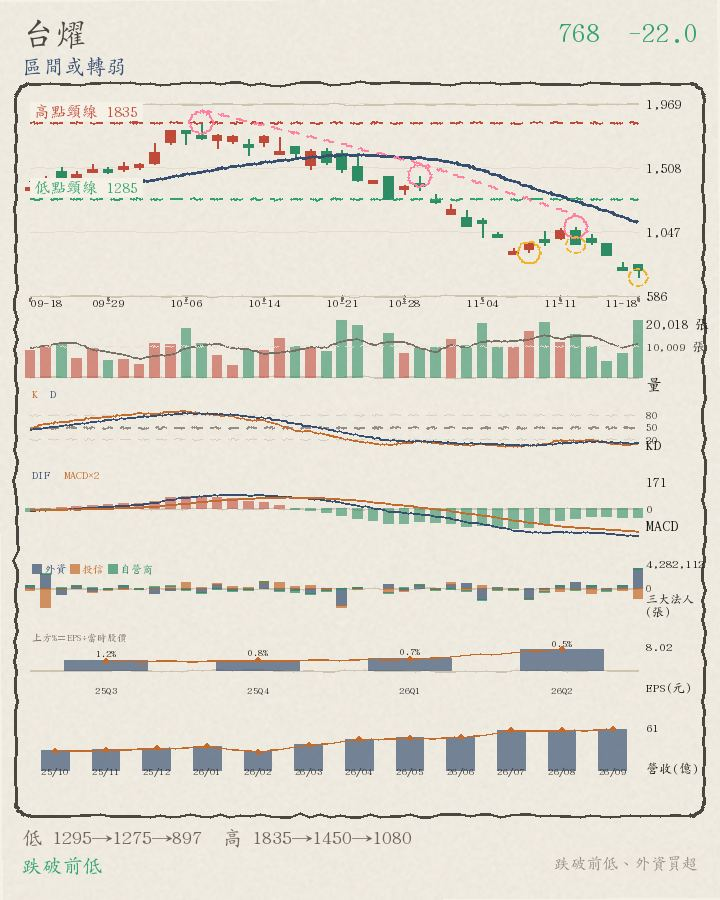
今天帶量收紅、跌破月線 912.3，離高點頸線 1835 還差 56.7%，轉折還沒走出明顯方向。
- 月線位置：收盤 794 在月線 912.3 之下；5 日線 718.8 也在月線之下（短均在下）；月線走平或向下、5 日線走平或向下
- 量能：成交量是 20 日均量的 1.36 倍，比 20 日均量大不少；收紅又量增，量價配合
- 關鍵價位：高點頸線 1835 還沒突破，差 56.7%；最近轉折高點 1080（低於 26.5%）；最近轉折低點 585（高於 35.7%）
- 轉折結構：低點 1275、897、585 與高點 1835、1450、1080 都沒有明顯遞增，屬於區間震盪或轉弱；還沒確認的轉折低點 11-12 954、11-25 685；還沒確認的轉折高點 11-26 812（圖上虛線小圈）
區間或轉弱 成交金額 101.71 億・全榜第 16 名（上櫃第 2 名）
好條件 2/4：在月線之下、月線下彎
不好條件 2/5：量價攻擊（收紅＋大量）、外資賣超

今天帶量收紅、跌破月線 412.275，離高點頸線 530 還差 35.8%，轉折還沒走出明顯方向。
- 月線位置：收盤 340 在月線 412.275 之下；5 日線 341.6 也在月線之下（短均在下）；月線走平或向下、5 日線走平或向下
- 量能：成交量是 20 日均量的 2.30 倍，比 20 日均量大不少；收紅又量增，量價配合
- 關鍵價位：高點頸線 530 還沒突破，差 35.8%；最近轉折高點 519（低於 34.5%）；最近轉折低點 291.5（高於 16.6%）
- 轉折結構：低點 399、362.5、291.5 與高點 530、513、519 都沒有明顯遞增，屬於區間震盪或轉弱；還沒確認的轉折低點 11-26 324.5；還沒確認的轉折高點 11-24 373（圖上虛線小圈）
區間或轉弱 成交金額 85.69 億・全榜第 21 名（上櫃第 3 名）
好條件 1/4：月線下彎
不好條件 3/5：站上月線、量價攻擊（收紅＋大量）、外資賣超

今天帶量收紅、站上月線 1605，離高點頸線 2350 還差 30.6%，轉折還沒走出明顯方向。
- 月線位置：收盤 1630 在月線 1605 之上；5 日線 1496 也在月線之下（短均在下）；月線走平或向下、5 日線走平或向下
- 量能：成交量是 20 日均量的 1.28 倍，比 20 日均量大不少；收紅又量增，量價配合
- 關鍵價位：高點頸線 2350 還沒突破，差 30.6%；最近轉折高點 1765（低於 7.6%）；最近轉折低點 1260（高於 29.4%）
- 轉折結構：低點 1865、1405、1260 與高點 2350、2090、1765 都沒有明顯遞增，屬於區間震盪或轉弱；還沒確認的轉折低點 11-17 1430、11-25 1470；還沒確認的轉折高點 11-24 1595、11-26 1630（圖上虛線小圈）
區間或轉弱 成交金額 63.13 億・全榜第 31 名（上櫃第 4 名）
好條件 2/4：在月線之下、月線下彎
不好條件 1/5：外資賣超
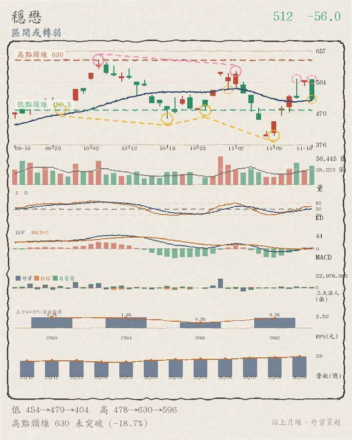
今天收紅、但成交量比平均少、跌破月線 478.225，離高點頸線 630 還差 29.4%，轉折還沒走出明顯方向。
- 月線位置：收盤 444.5 在月線 478.225 之下；5 日線 417.5 也在月線之下（短均在下）；月線走平或向下、5 日線走平或向下
- 量能：成交量是 20 日均量的 0.50 倍，比 20 日均量少很多；收紅但量縮，量價背離
- 關鍵價位：高點頸線 630 還沒突破，差 29.4%；最近轉折高點 573（低於 22.4%）；最近轉折低點 351（高於 26.6%）
- 轉折結構：低點 479、403.5、351 與高點 630、596、573 都沒有明顯遞增，屬於區間震盪或轉弱；還沒確認的轉折低點 11-25 404.5；還沒確認的轉折高點 11-18 510、11-25 465（圖上虛線小圈）
區間或轉弱 成交金額 57.84 億・全榜第 37 名（上櫃第 5 名）
好條件 3/4：在月線之下、月線下彎、外資買超
不好條件 0/5：無

今天收紅、但成交量比平均少、跌破月線 122.55，離高點頸線 150.5 還差 28.6%，轉折還沒走出明顯方向。
- 月線位置：收盤 107.5 在月線 122.55 之下；5 日線 104.6 也在月線之下（短均在下）；月線走平或向下、5 日線走平或向下
- 量能：成交量是 20 日均量的 0.52 倍，比 20 日均量少很多；收紅但量縮，量價背離
- 關鍵價位：高點頸線 150.5 還沒突破，差 28.6%；最近轉折高點 150.5（低於 28.6%）；最近轉折低點 90.4（高於 18.9%）
- 轉折結構：低點 124、109.5、90.4 與高點 149、143.5、150.5 都沒有明顯遞增，屬於區間震盪或轉弱；還沒確認的轉折低點 11-18 110、11-25 101.5；還沒確認的轉折高點 11-25 115.5（圖上虛線小圈）
區間或轉弱 成交金額 45.13 億・全榜第 42 名（上櫃第 6 名）
好條件 2/4：在月線之下、月線下彎
不好條件 1/5：外資賣超

今天收紅、跌破月線 4121.25，離高點頸線 6160 還差 33.2%，轉折還沒走出明顯方向。
- 月線位置：收盤 4115 在月線 4121.25 之下；5 日線 3887 也在月線之下（短均在下）；月線走平或向下、5 日線走平或向下
- 量能：成交量是 20 日均量的 0.99 倍，跟 20 日均量差不多
- 關鍵價位：高點頸線 6160 還沒突破，差 33.2%；最近轉折高點 5100（低於 19.3%）；最近轉折低點 3250（高於 26.6%）
- 轉折結構：低點 4995、3355、3250 與高點 6160、5150、5100 都沒有明顯遞增，屬於區間震盪或轉弱；還沒確認的轉折低點 11-18 3880、11-25 3770；還沒確認的轉折高點 11-24 4185、11-26 4135（圖上虛線小圈）
區間或轉弱 成交金額 45.12 億・全榜第 43 名（上櫃第 7 名）
好條件 2/4：在月線之下、月線下彎
不好條件 2/5：量價攻擊（收紅＋大量）、外資賣超

今天帶量收紅、跌破月線 11355.2，離高點頸線 18465 還差 49.2%，轉折還沒走出明顯方向。
- 月線位置：收盤 9380 在月線 11355.2 之下；5 日線 8697 也在月線之下（短均在下）；月線走平或向下、5 日線走平或向下
- 量能：成交量是 20 日均量的 1.05 倍，比 20 日均量大一些；收紅又量增，量價配合
- 關鍵價位：高點頸線 18465 還沒突破，差 49.2%；最近轉折高點 13375（低於 29.9%）；最近轉折低點 7295（高於 28.6%）
- 轉折結構：低點 15500、10710、7295 與高點 18465、17490、13375 都沒有明顯遞增，屬於區間震盪或轉弱；還沒確認的轉折低點 11-25 8500；還沒確認的轉折高點 11-25 9590（圖上虛線小圈）
區間或轉弱 成交金額 44.61 億・全榜第 44 名（上櫃第 8 名）
好條件 2/4：在月線之下、月線下彎
不好條件 2/5：量價攻擊（收紅＋大量）、外資賣超

今天帶量收紅、跌破月線 1073.2，離高點頸線 1515 還差 43.4%，轉折還沒走出明顯方向。
- 月線位置：收盤 858 在月線 1073.2 之下；5 日線 816.2 也在月線之下（短均在下）；月線走平或向下、5 日線走平或向下
- 量能：成交量是 20 日均量的 1.14 倍，比 20 日均量大一些；收紅又量增，量價配合
- 關鍵價位：高點頸線 1515 還沒突破，差 43.4%；最近轉折高點 1315（低於 34.8%）；最近轉折低點 715（高於 20.0%）
- 轉折結構：低點 1310、1050、715 與高點 1515、1515、1315 都沒有明顯遞增，屬於區間震盪或轉弱；還沒確認的轉折低點 11-25 769；還沒確認的轉折高點 11-18 1015、11-25 892（圖上虛線小圈）
區間或轉弱 成交金額 38.93 億・全榜第 50 名（上櫃第 9 名）
好條件 2/4：在月線之下、月線下彎
不好條件 1/5：外資賣超

今天收紅、但成交量比平均少、跌破月線 575.9，離高點頸線 1260 還差 58.9%，轉折還沒走出明顯方向。
- 月線位置：收盤 518 在月線 575.9 之下；5 日線 480.6 也在月線之下（短均在下）；月線走平或向下、5 日線走平或向下
- 量能：成交量是 20 日均量的 0.71 倍，比 20 日均量少很多；收紅但量縮，量價背離
- 關鍵價位：高點頸線 1260 還沒突破，差 58.9%；最近轉折高點 663（低於 21.9%）；最近轉折低點 410.5（高於 26.2%）
- 轉折結構：低點 872、508、410.5 與高點 1010、1260、663 都沒有明顯遞增，屬於區間震盪或轉弱；還沒確認的轉折低點 11-25 455.5；還沒確認的轉折高點 11-18 577、11-26 524（圖上虛線小圈）
區間或轉弱 成交金額 23.87 億・全榜第 60 名（上櫃第 10 名）
好條件 3/4：在月線之下、月線下彎、外資買超
不好條件 1/5：量價攻擊（收紅＋大量）
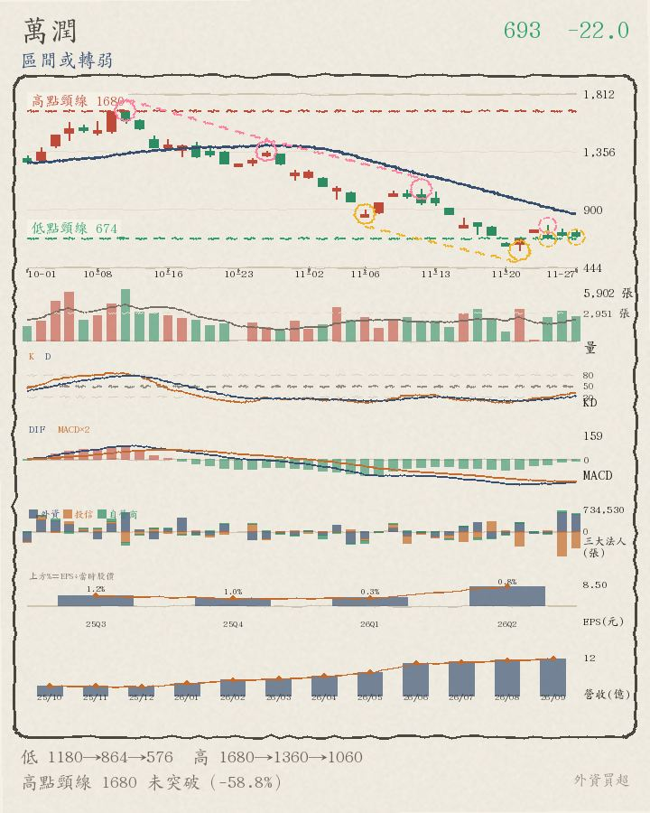
今天帶量收紅、跌破月線 889.05，離高點頸線 1680 還差 57.4%，轉折還沒走出明顯方向。
- 月線位置：收盤 715 在月線 889.05 之下；5 日線 687.8 也在月線之下（短均在下）；月線走平或向下、5 日線走平或向下
- 量能：成交量是 20 日均量的 1.57 倍，比 20 日均量大不少；收紅又量增，量價配合
- 關鍵價位：高點頸線 1680 還沒突破，差 57.4%；最近轉折高點 1060（低於 32.5%）；最近轉折低點 576（高於 24.1%）
- 轉折結構：低點 1180、864、576 與高點 1680、1360、1060 都沒有明顯遞增，屬於區間震盪或轉弱；還沒確認的轉折低點 11-25 666；還沒確認的轉折高點 11-25 775（圖上虛線小圈）
區間或轉弱 成交金額 21.68 億・全榜第 61 名（上櫃第 11 名）
好條件 3/4：在月線之下、月線下彎、外資買超
不好條件 0/5：無

今天收紅、但成交量比平均少、跌破月線 327.1，離高點頸線 578 還差 53.5%，轉折還沒走出明顯方向。
- 月線位置：收盤 268.5 在月線 327.1 之下；5 日線 254.2 也在月線之下（短均在下）；月線走平或向下、5 日線走平或向下
- 量能：成交量是 20 日均量的 0.65 倍，比 20 日均量少很多；收紅但量縮，量價背離
- 關鍵價位：高點頸線 578 還沒突破，差 53.5%；最近轉折高點 413（低於 35.0%）；最近轉折低點 222.5（高於 20.7%）
- 轉折結構：低點 399.5、301、222.5 與高點 578、510、413 都沒有明顯遞增，屬於區間震盪或轉弱；還沒確認的轉折低點 11-25 241；還沒確認的轉折高點 11-25 274.5（圖上虛線小圈）
區間或轉弱 成交金額 21.46 億・全榜第 62 名（上櫃第 12 名）
好條件 3/4：在月線之下、月線下彎、外資買超
不好條件 0/5：無
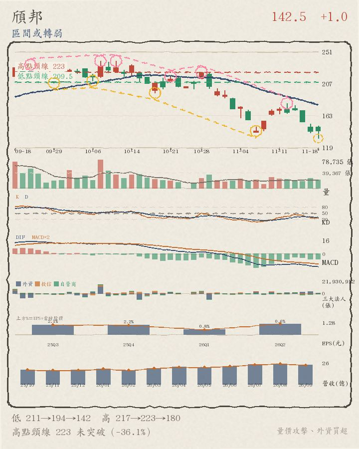
今天收紅、但成交量比平均少、跌破月線 153.425，離高點頸線 223 還差 40.8%，轉折還沒走出明顯方向。
- 月線位置：收盤 132 在月線 153.425 之下；5 日線 126 也在月線之下（短均在下）；月線走平或向下、5 日線走平或向下
- 量能：成交量是 20 日均量的 0.82 倍，比 20 日均量少很多；收紅但量縮，量價背離
- 關鍵價位：高點頸線 223 還沒突破，差 40.8%；最近轉折高點 180（低於 26.7%）；最近轉折低點 108.5（高於 21.7%）
- 轉折結構：低點 194.5、142、108.5 與高點 217、223、180 都沒有明顯遞增，屬於區間震盪或轉弱；還沒確認的轉折低點 11-25 121.5；還沒確認的轉折高點 11-25 136.5（圖上虛線小圈）
區間或轉弱 成交金額 20.42 億・全榜第 63 名（上櫃第 13 名）
好條件 3/4：在月線之下、月線下彎、外資買超
不好條件 0/5：無

今天收紅、但成交量比平均少、跌破月線 1860.75，離高點頸線 3210 還差 51.9%，轉折還沒走出明顯方向。
- 月線位置：收盤 1545 在月線 1860.75 之下；5 日線 1449 也在月線之下（短均在下）；月線走平或向下、5 日線走平或向下
- 量能：成交量是 20 日均量的 0.45 倍，比 20 日均量少很多；收紅但量縮，量價背離
- 關鍵價位：高點頸線 3210 還沒突破，差 51.9%；最近轉折高點 2320（低於 33.4%）；最近轉折低點 1230（高於 25.6%）
- 轉折結構：低點 2365、1705、1230 與高點 3210、2795、2320 都沒有明顯遞增，屬於區間震盪或轉弱；還沒確認的轉折低點 11-25 1375；還沒確認的轉折高點 11-24 1525、11-26 1545（圖上虛線小圈）
區間或轉弱 成交金額 19.07 億・全榜第 64 名（上櫃第 14 名）
好條件 3/4：在月線之下、月線下彎、外資買超
不好條件 1/5：量價攻擊（收紅＋大量）
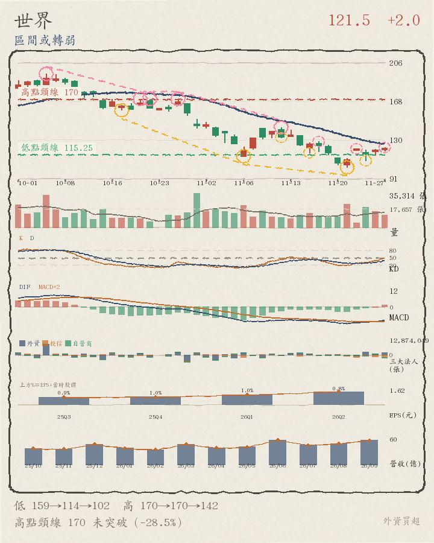
今天帶量收紅、跌破月線 127.025，離高點頸線 170 還差 29.7%，轉折還沒走出明顯方向。
- 月線位置：收盤 119.5 在月線 127.025 之下；5 日線 114.7 也在月線之下（短均在下）；月線走平或向下、5 日線走平或向下
- 量能：成交量是 20 日均量的 1.06 倍，比 20 日均量大一些；收紅又量增，量價配合
- 關鍵價位：高點頸線 170 還沒突破，差 29.7%；最近轉折高點 142（低於 15.8%）；最近轉折低點 102.5（高於 16.6%）
- 轉折結構：低點 159、113.5、102.5 與高點 170、170、142 都沒有明顯遞增，屬於區間震盪或轉弱；還沒確認的轉折低點 11-17 117、11-25 109；還沒確認的轉折高點 11-24 121、11-26 120.5（圖上虛線小圈）
底部墊高、突破前高 成交金額 18.61 億・全榜第 65 名（上櫃第 15 名）
好條件 1/4：外資買超
不好條件 4/5：站上月線、月線向上、突破頸線、量價攻擊（收紅＋大量）

今天帶量收紅、站上月線 168.25，已站上高點頸線 171，轉折結構仍是底底高＋頭頭高。
- 月線位置：收盤 173 在月線 168.25 之上；5 日線 172.1 也在月線之上（短均在上）；月線向上、5 日線向上
- 量能：成交量是 20 日均量的 1.09 倍，比 20 日均量大一些；收紅又量增，量價配合
- 關鍵價位：高點頸線 171 已站上；最近轉折高點 171（高於 1.2%）；最近轉折低點 168（高於 3.0%）
- 轉折結構：低點 134.5、156、168 一路墊高 24.9%、高點 153.5、150、171 也一路墊高 1.8%，是底底高＋頭頭高；還沒確認的轉折低點 11-17 168.5、11-25 171；還沒確認的轉折高點 11-24 174、11-26 173.5（圖上虛線小圈）
區間或轉弱 成交金額 18.48 億・全榜第 66 名（上櫃第 16 名）
好條件 3/4：在月線之下、月線下彎、外資買超
不好條件 1/5：量價攻擊（收紅＋大量）

今天帶量收紅、跌破月線 907.5，離高點頸線 1375 還差 42.2%，轉折還沒走出明顯方向。
- 月線位置：收盤 795 在月線 907.5 之下；5 日線 779.6 也在月線之下（短均在下）；月線走平或向下、5 日線走平或向下
- 量能：成交量是 20 日均量的 1.08 倍，比 20 日均量大一些；收紅又量增，量價配合
- 關鍵價位：高點頸線 1375 還沒突破，差 42.2%；最近轉折高點 1025（低於 22.4%）；最近轉折低點 695（高於 14.4%）
- 轉折結構：低點 1065、851、695 與高點 1375、1205、1025 都沒有明顯遞增，屬於區間震盪或轉弱；還沒確認的轉折低點 11-17 780、11-25 768；還沒確認的轉折高點 11-18 879、11-24 853（圖上虛線小圈）
區間或轉弱 成交金額 18.41 億・全榜第 67 名（上櫃第 17 名）
好條件 3/4：在月線之下、月線下彎、外資買超
不好條件 1/5：量價攻擊（收紅＋大量）

今天帶量收紅、跌破月線 175.775，離高點頸線 291.5 還差 46.5%，轉折還沒走出明顯方向。
- 月線位置：收盤 156 在月線 175.775 之下；5 日線 146.9 也在月線之下（短均在下）；月線走平或向下、5 日線走平或向下
- 量能：成交量是 20 日均量的 1.11 倍，比 20 日均量大一些；收紅又量增，量價配合
- 關鍵價位：高點頸線 291.5 還沒突破，差 46.5%；最近轉折高點 204.5（低於 23.7%）；最近轉折低點 127（高於 22.8%）
- 轉折結構：低點 241.5、162、127 與高點 291.5、279.5、204.5 都沒有明顯遞增，屬於區間震盪或轉弱；還沒確認的轉折低點 11-12 184、11-25 140；還沒確認的轉折高點 11-24 155.5、11-26 157（圖上虛線小圈）
區間或轉弱 成交金額 15.17 億・全榜第 68 名（上櫃第 18 名）
好條件 3/4：在月線之下、月線下彎、外資買超
不好條件 0/5：無
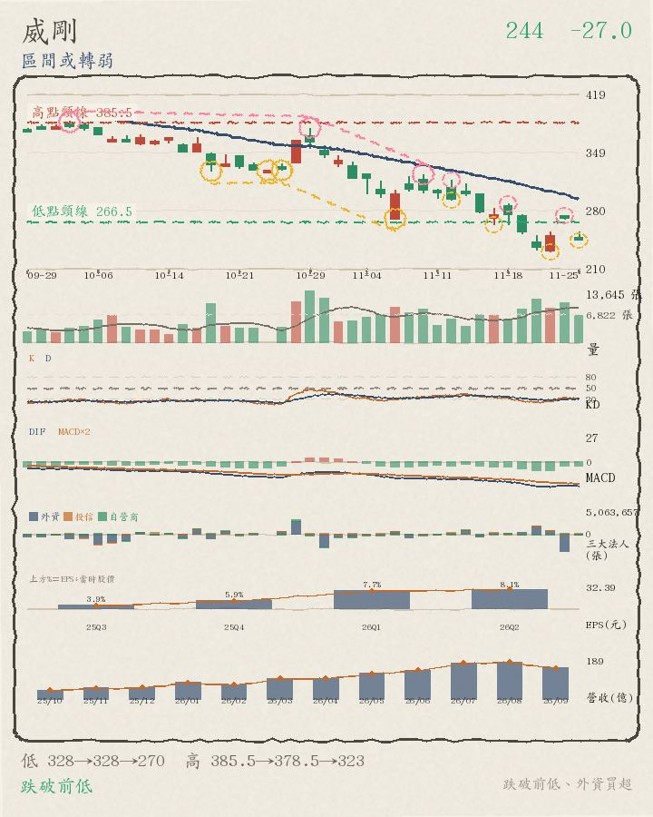
今天收紅、但成交量比平均少、跌破月線 288.8，離高點頸線 385.5 還差 31.8%，轉折還沒走出明顯方向。
- 月線位置：收盤 263 在月線 288.8 之下；5 日線 252.6 也在月線之下（短均在下）；月線走平或向下、5 日線走平或向下
- 量能：成交量是 20 日均量的 0.76 倍，比 20 日均量少很多；收紅但量縮，量價背離
- 關鍵價位：高點頸線 385.5 還沒突破，差 31.8%；最近轉折高點 323（低於 18.6%）；最近轉折低點 230.5（高於 14.1%）
- 轉折結構：低點 328、270、230.5 與高點 385.5、378.5、323 都沒有明顯遞增，屬於區間震盪或轉弱；還沒確認的轉折低點 11-17 263、11-25 244；還沒確認的轉折高點 11-24 274、11-26 267（圖上虛線小圈）
區間或轉弱 成交金額 14.79 億・全榜第 69 名（上櫃第 19 名）
好條件 2/4：在月線之下、月線下彎
不好條件 1/5：外資賣超

今天收紅、但成交量比平均少、跌破月線 340.25，離高點頸線 588 還差 52.6%，轉折還沒走出明顯方向。
- 月線位置：收盤 279 在月線 340.25 之下；5 日線 268.8 也在月線之下（短均在下）；月線走平或向下、5 日線走平或向下
- 量能：成交量是 20 日均量的 0.89 倍，比 20 日均量少一些；收紅但量縮，量價背離
- 關鍵價位：高點頸線 588 還沒突破，差 52.6%；最近轉折高點 410.5（低於 32.0%）；最近轉折低點 239.5（高於 16.5%）
- 轉折結構：低點 445、312、239.5 與高點 588、531、410.5 都沒有明顯遞增，屬於區間震盪或轉弱；還沒確認的轉折低點 11-25 253；還沒確認的轉折高點 11-18 340.5、11-25 299（圖上虛線小圈）
區間或轉弱 成交金額 14.7 億・全榜第 70 名（上櫃第 20 名）
好條件 3/4：在月線之下、月線下彎、外資買超
不好條件 0/5：無

今天收紅、但成交量比平均少、跌破月線 2111.25，離高點頸線 3635 還差 45.8%，轉折還沒走出明顯方向。
- 月線位置：收盤 1970 在月線 2111.25 之下；5 日線 1906 也在月線之下（短均在下）；月線走平或向下、5 日線走平或向下
- 量能：成交量是 20 日均量的 0.63 倍，比 20 日均量少很多；收紅但量縮，量價背離
- 關鍵價位：高點頸線 3635 還沒突破，差 45.8%；最近轉折高點 2425（低於 18.8%）；最近轉折低點 1705（高於 15.5%）
- 轉折結構：低點 2470、1825、1705 與高點 3635、2675、2425 都沒有明顯遞增，屬於區間震盪或轉弱；還沒確認的轉折低點 11-25 1825；還沒確認的轉折高點 11-18 2315、11-24 2080（圖上虛線小圈）